Chapter 6 Version control with git
6.1 Should I learn version control?
When you use version control, you can do the following:
- Keep a history of all the changes you have made to your code.
- Be able to revert to an old version, or briefly look around in old code, or find any code you have written at some time in the past.
- Undo fatal coding mistakes.
- Avoid having multiple versions of the same script (
myscrip_v1.R,myscript_v1_mod2.Retc.), and commented-out bits of code that you no longer need. - Collaborate with others on the same code, and easily merge the changes you and your collaborators make.
- Maintain an online backup of your code base.
These are all basic capabilities of version control, and as you can see an absolute requirement for even the somewhat serious coder. Here we use version control with git, the most popular system. In this chapter, I will give an informal introduction to version control, and focus on its use in Rstudio. The command line will also be introduced, particularly for somewhat more advanced options. The built-in menus in Rstudio are fine for most basic uses, although the use of the command line is recommended when you are committing many files at once (when Rstudio can be very slow and unresponsive).
6.2 Basics of git
6.2.1 Basic principles
With git, every folder that you work in can have its own version control repository. This allows you to keep your projects neatly organized in separate folders, each with its own history and set of files that belong together. Organizing code in smaller projects also makes for a natural connection to projects in Rstudio, as we will see shortly.
Not all files in the folder need to be kept track of in the git repository. You can specify yourself which files you want to have under version control. Generally speaking it’s up to you which files to track, but a few guidelines are helpful. Mind you that exceptions will arise for each of these ideas; every project is different.
- It is useful to follow the idea that input files (code, data) are the most important files in your project, whereas output files (figures, processed data, markdown reports, etc.) should be treated as temporary. If you set up your workflow well, you should always be able to generate all outputs from the inputs. As a result, generally speaking **it is a good idea to version control all input files, but none of your output files}.
- Avoid tracking binary files (non-text files). The two reasons are that a) git cannot see incremental changes to these files (only that the entire file has changed), and b) continuously updating larger binary files will increase the size of the git repository (a collection of hidden files storing your history) - eventually to unmanageable bloatedness.
- There is no need to track the Rstudio project file (*.Rproj), and probably better if you don’t especially when collaborating.
- Text-based datasets can be stored very well in git repositories, but that git is not a data management tool per se. It is therefore a bad idea to include large datasets, only smallish datasets in the repository.
You can decide manually which files to track, and you can also “ignore” files by listing them in a special file, .gitignore, as we will see later.
With git, you can ‘store’ a snapshot of all the tracked files in your repository as often as you like. Normally, this snapshot represents a significant change you made to your code, some new feature added, new figures coded, or whatever. It can be any point during your work where you think it may be useful to return to. With every snapshot, you can decide which changes to the tracked files should be included (‘staged’). It is thus important to realize that a version control repository acts on multiple files in the folder, not separately for each file. This way we can also add and delete files, and keep track of their histories as well (e.g. return to a version of the repository when a particular file was not deleted).
When we store a snapshot of the repository, this is called a commit. When we commit changes to the files in the repository, we do this because we may wish to return to this point, or clearly document the changes we have made. When a commit is made, a message has to be written to document what we have done (as we will see further below). Every time we commit, we can manually select which files should be added to the next snapshot. This process is called staging, and it allows you to decide to keep some changes, and undo all other changes, for example.
6.2.1.1 Local and remote repositories
An important concept when starting with git is that there is a distinction between local and remote repositories. With git, your version control is fundamentally done on your computer, that is, it is a local repository. Optionally, this local repository may be synced with a remote repository (on some online web service). It is thus important to understand that a) you do not need to have a remote repository for git to function (you do not need an internet connection) and b) you must have a local repository even if you also have a remote one.
Finally, do not confuse ‘github’ with ‘git’, the former is a website (github.com) used for hosting remote git repositories, the latter is the actual version control system. There are other websites of that kind (for example bitbucket.org). The inventor of git has nothing to do with these websites.
6.2.1.2 Rstudio projects
If you end up working primarily from Rstudio, we very strongly recommend the use of Projects in Rstudio to keep your work organized, and to help set the working directory.
Rstudio projects are really just small files added to a certain folder, which “tags” that folder as containing a particular project. You can switch easily between different projects, or have multiple instances of Rstudio open, all with different projects (something I do a lot). When you switch to a project, it also sets the working directory to the folder where the .Rproj file is located.
We make an Rstudio project in Section 6.3.1 and also return to projects in Section ??.
6.2.2 Installing git
To get started, first install the actual git program from https://git-scm.com/. During the installation process, do not change any of the defaults, just press OK when prompted.
The first time you use git on a computer, you have to set your name and email. These will be appended to each time you commit (very useful when collaborating!).
Normally you can open a ‘git bash shell’ (a command line window) from Rstudio, as we show in Section 6.6. This first time, however, you might have to find Git Bash in the list of installed programs.
With the shell open, type the following commands, using the name and email address you want appended to each commit. You can change this setting any time, the current setting will be applied to the next commit.
git config --global user.name "My Name"
git config --global user.email "myemail@somewhere.com"To check the settings configuration file (which is stored in your home directory), use :
git config --listYou can now close the shell. We return to the shell in a later section. The built-in menu’s in Rstudio are fine for 95% of our work with git.
6.2.3 Using git in Rstudio
After installation, Rstudio may have trouble finding the git executable (a reboot may help, but this does not always fix the problem). We can let Rstudio know where git was installed by clicking Browse in the following screenshot (on Windows it will most likely be installed in this exact directory).
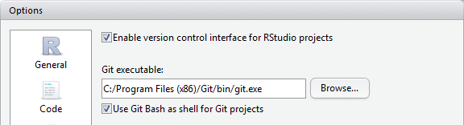
Click Browse to find the directory where git.exe is installed, on Windows it will be this exact directory. You may not have to do this if you rebooted after installing git.
6.3 Local git repositories
Before we turn to remote repositories, we first need a basic understanding of local repositories. Unlike some version control systems, git can work with only a local repository; this can be very useful when you want to commit changes when you are offline.
The workflow with a local git repository is as follows:
- Make changes to your code
- Stage changes, this will mark the changes to the files to be added to the next ‘commit’.
- Commit your changes to the local git repository.
- Repeat.
6.3.1 A first session with version control in Rstudio
Let’s start a new Rstudio project with version control. In this example we will make a simple local project, with no remote repository defined. We do that in Section 6.4.
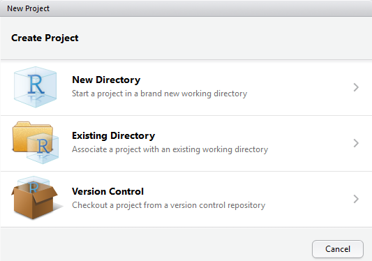
To start a new, local, project with git enabled click ‘New Directory’ (not Version Control!). Alternatively you can use an ‘Existing Directory’ and create a project there.
On the next tab, select Empty Project, and the following window appears. Here, give the project a reasonable name- it will be used to create a new folder if you selected ‘New Directory’ in the above window. Now, also check the box that says ‘Create git repository’.
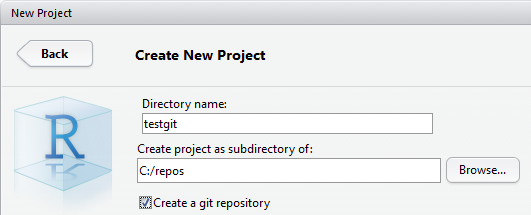
Enter a name for the new project, the directory where the project will be created (as a sub-directory with the project’s name). Check ‘Create a git repository’ to enable git.
Click OK, and if successful, you wil switch to a new instance of Rstudio. The git tab should look like the following figure.
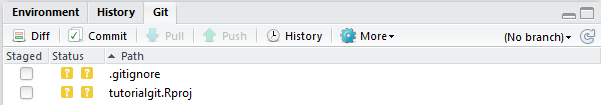
What your git tab should look like if you started an empty project in a new directory.
The two files in the folder show up with two question marks. This means that git is not sure if you want to track these files. By default, it won’t track them. The .gitignore file is a special file that lists all the files you always will want to ignore. It is very useful and we will use it later.
Now, let’s open two new scripts and write some code. I have called my new scripts analysis.R and figures.R. As you expect, these two files will show up in the git tab with two question marks. Notice the Staged column in the above figure? Let’s stage both files by checking them, as in the below figure.
Two new files are staged for the next commit. The green ‘A’ means ‘Add’, because these files were not already being tracked by the git repository.
We will now make our first commit. With the files staged as in the screenshot, click the ‘Commit’ button.
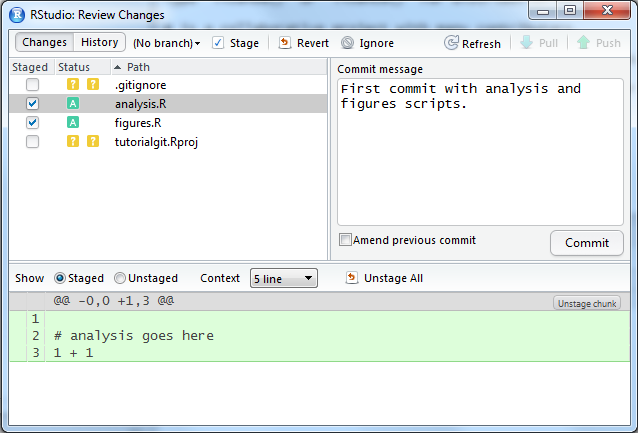
With the two new files staged, you can commit their changes to the local git repository. You must first write a meaningul message in the box on the right.
The files will now have disappeared from the git tab. That’s good - their versions are the same as the last time you committed, that is, they have not changed in content. Now let’s modify analysis.R, and delete figures.R (maybe you decided to combine code from these files into a single file), and see what happens.
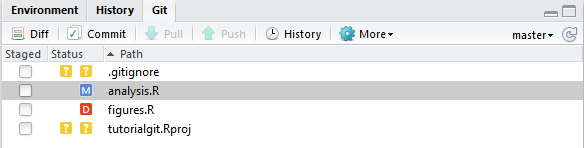
Here we have modified (M) and deleted (D) files that are being tracked by git.
Now, stage both files, and press Commit. Write a message that briefly describes your changes and click ‘Commit’ in the next window as well:
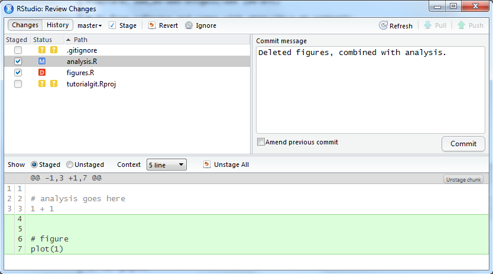
With the modified and deleted file selected, write a message and click Commit.
Let’s now look at the history of our first project sofar. Find the ‘History’ button in the git tab. It will look like the following screenshot.
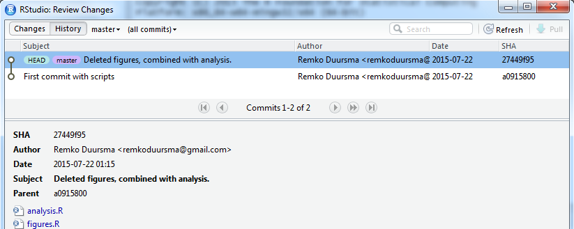
History of the project sofar. The HEAD tag means this is the current location of the working directory. As we will see later, we can check out older versions, in which case HEAD will move to whatever commit we are looking at. Shown are the messages we wrote when committing, the author and date (taken from the git configuration), and the SHA.
The ‘SHA’ is the unique code given to each commit. You normally don’t have to use it in Rstudio, but it is important in the command line commands given below. We never need all characters from the SHA, only the first few (normally 5 or so). You can find the (abbreviated) SHA in the right-hand column of the history.
The question marks for .gitignore and the Rproj indicate that these files have not been staged in any previous commit. If you do not want to ever track them, see Section 6.5.
6.3.2 Deleting files and sensitive information
Some new users are surprised by how git deals with deleting files in your repository. If you delete a file, git will mark the file as deleted (with a red D in the Rstudio interface), and you can stage the change to also remove the file from git (so it won’t be tracked anymore). Even though the file is deleted, it is still contained in the history of your repository. That means you (or someone else) can return to a state of the repository that included the file, and read its contents.
If you accidentally committed a file with sensitive information, such as passwords, deleting the file does not remove it from the history. There is also a way to completely remove files, even from the history, but this is a bit cumbersome and best avoided. Normally we do not like to change history unless some of the files are very large or contain sensitive information.
6.3.3 Reverting changes
To undo changes to files in Rstudio, and reset to the last known version of that file (i.e. the the last commit), select the file and click the ‘Revert’ button (this button is only visible in the Commit window, otherwise it is grouped under the ‘More’ button). Sometimes this menu in Rstudio is a little buggy, reverting only one file at a time.
If you are 100% sure you have made commits you want to delete forever, see Section 6.6 for the use of git reset --hard.
6.4 Remote git repositories
Version control with git becomes especially useful if you host your code in an online (‘remote’) repository. It is an essential step for collaboration (even if this is just with yourself, on multiple computers). Popular sites to host git repositories are <www.github.com> and <www.bitbucket.org>. I will not provide a guide to using either site, I will leave this to you to figure out. Either way, the first step is to create a user account, and set up the remote to be able to communicate with your computer.
A few tips to get started:
- A remote repository is simply a copy of your local project, think of it as a backup (with few extras).
- It is generally a good idea to organize your local repositories in a single directory, a location with a short path is useful since you will be accessing your repositories via the command line.
- You can add git version control to an existing project, but the easiest, most fail-safe way is to create a remote repository, then make a new project in Rstudio pulling from that repository, and adding your files into the project. We will follow this approach below.
6.4.0.1 HTTPS or SSH?
There are two ways to connect to a git repository hosted on a remote (like github). The easiest setup is connecting via HTTPS, but this will require you to enter your password every time you try to update the remote. I recommend HTTPS only when you are using a public computer.
A better approach is to use SSH, since you never have to type your password - a sort of password will be saved on your computer.
6.4.0.2 Setting up SSH
If you are using SSH for authentication, you must first make a sort of password (an ‘SSH key’), which is stored on your computer as well as on the hosting site. This is a straightforward process thanks to Rstudio.
- Go to
Tools/Global Options...then click on theGit/SVNbutton, and note the ‘SSH/RSA key’ field. - This field is probably blank, now click on
Create RSA Key. Leave the passphrase blank (unless you would like an extra layer of security), and click OK. - Next, click ‘View RSA Key’ (a small link), and copy the key (Ctrl-C).
The next step is to paste the SSH key in the remote hosting site, so it knows who you are when you try to use the repository.
On bitbucket, when logged in, click ‘Manage Account’, and find ‘SSH Keys’ on the left. Then click ‘Add Key’, and you now have to paste the key that you copied in the previous step.
On github, go to Settings/SSH and GPG keys and make a “New SSH key”, and paste it in as above.
You can now paste it into the field. Also add a nice label for the key (identifying the computer you are working on).
6.4.1 Making a remote repository
Now, let’s create a remote repository. On bitbucket (when you are logged in), click the “+” in the left-hand side menu, on github click the plus (‘+’) button in the top right and Create repository. Decide for yourself on the settings for the repository, such as Private/Public etc.
The key thing for us is to find the address of the repository, we need this to use the remote in Rstudio. When using SSH, it will look like (on bitbucket):
git@bitbucket.org:remkoduursma/tutorialgit.gitWhen using HTTPS, it will look like this:
https://remkoduursma@bitbucket.org/remkoduursma/tutorialgit.git6.4.1.1 Adding a remote repository to an existing project
To do this, you have to use the command line. If you want to use only Rstudio’s menu’s, skip to the next section.
With the command line (bash) open in the working directory, type the following two commands where you replace the github URL with the one matching your remote repository.
git remote add origin git@github.com:USERNAME/REPOSITORY.git
git push -u origin masterThe remote repository will now be an exact copy of your local one (besides untracked files).
6.4.1.2 Cloning : make a local copy of a remote repository
The easiest approach is to start with an empty remote repository and use it as the basis for a new project in Rstudio. Then, you can add your files to this repository and start tracking (a selection of) them.
First, make a remote repository, find the address (SSH or HTTPS, see previous section), and copy it. In Rstudio, go File/New Project.../Version Control/Git and paste the address in the URL box (HTTPS or SSH, it will be recognized). Rstudio is going to create a (nearly empty) folder with a git repository. It will create this as a subfolder of the directory in the window you see (the third field). I recommend you keep your git repositories in a local folder in the root, that contains no spaces in the name. For example, c:/repos/.
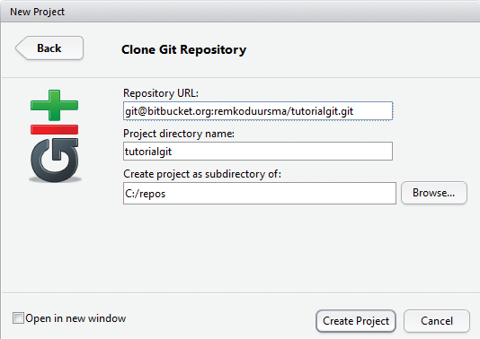
Paste the remote address of the repository in the first field, the second field will automatically get the name of the remote repository, and for the third field select a directory yourself (but see text).
When you click OK, Rstudio should open up with the new project.
6.4.2 Workflow
Whether or not you have a remote repository enabled, you will still work in a local repository as explained in Section 6.3, and occassionally synchronize the two. In other words, committing changes is always local. When you want to sync with a remote, you either do a push (send your commits to the remote repository), or a pull (get the latest commits from the remote that you don’t have).
It is important to note that you can only push if the local up to date with remote. We will see in the working example how to deal with the situation where we are ‘behind’ the remote (that is, have not included some commits stored in the remote repository).
The standard workflow for code stored in a remote repository is:
- Pull - this makes sure you start with the version contained in the remote repository.
- Write code, commit changes.
- Repeat step 2. until you are finished with this session.
- Push - this sends all the commits you made to the remote repository.
It is thus important to understand that you don’t have to push every time you commit changes. In fact it is better if you don’t, because it is easier to fix problems in the local repository, than when the commits have been pushed to the remote.
6.4.3 A session with a remote repository
In this section, I will show a typical workflow with a remote repository. In this example I assume you have made a remote repository, and we will clone the empty repository into a new Rstudio project (see ‘Cloning’ in Section 6.4.1.
If these first two steps - explained in the previous section - were successful, you now have a new, empty project open in Rstudio. I have copied two scripts that I wrote previously into the folder. In the git tab in Rstudio, you have to ‘stage’ the added files by clicking the check box. The two new files now show up with a green ‘A’ :
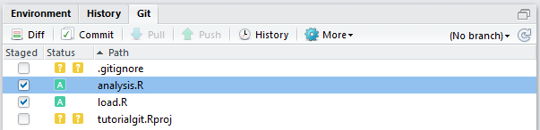
Adding two files to be included in the next commit. Note that ‘Push’ and ‘Pull’ are greyed out, this is normal because we have no commits in the repository.
Next, click commit (opens up a new window), write a reasonable message in the text box on the right, and click ‘Commit’. You now have a single commit in the local repository. Again, it is crucial you understand that this commit is not yet on the remote.
Let’s push this first commit to the remote repository. Just click ‘Push’ on the git tab, and a new window opens up in Rstudio with the response from the remote. It will say something like,
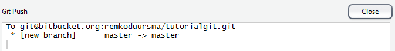
Response of the remote after the first push (opens in Rstudio when you click ‘push’). Note that a new branch is created because this is the very first commit on the remote repository. All commits will always go to the ‘master’ branch (in this tutorial, at least).
Now go to the online version (on github.com or bitbucket.org), and check that your code is really there. Also look for the ‘commits’ (a list of all your commits) and the source code (you can, quite conveniently, browse the code online).
Next, suppose you start a new session with this project. As described in Section 6.4.2, you should always start with a pull, except when you are really 100% sure that your local is already up to date with the remote. If you are already up to date, the output will be:
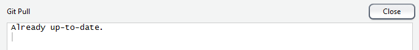
Output from a ‘pull’ when the local repository is already synced with the remote.
In the next example, I added the file README.md to the repository on another computer. This time, the output from ‘pull’ looks like:
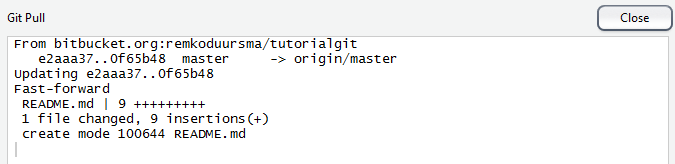
Output from a ‘pull’ when the local repository is behind the remote. This is a successful message. It says that the two repositories have been successfully merged.
Finally, a common situation arises where you have not pulled from the remote, have done work locally and committed the changes. It is possible that the remote includes changes that you don’t have, for example commits created by a collaborator and pushed to the same remote repository, or work done by you on another computer. If the remote is ahead of you, and you are trying to push local commits that the remote does not yet have, you will see the output as in the following screenshot.
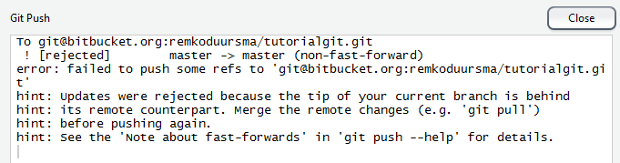
Output when attempting to push to a remote when the remote is ahead of the local repository.
The solution to this problem is to first do a pull, and then try to push again. The amazing thing about git is that even if your local commits and the commits on the remote that you don’t yet have include changes on the same files, they will be automatically merged in the new commit.
6.4.4 Conflicts when collaborating
Version control is especially powerful when collaborating on the same code. When you work on separate files, or even different sections of the same file, git knows how to combine commits from one user with commits from another user. You can even see who changed which line of code with the git blame command.
There are cases, however, where conflicts arise when two users have changed the same line of code. Suppose User 1 makes changes, commits, and pushes to the remote. Then, you make changes to some of the same lines, commit and push, you receive the following error:
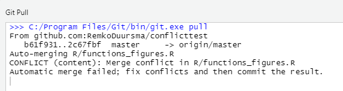
When pushing your changes to the remote - but the remote has already incorporated commits on the same lines of code - you have created conflicts
You now have to fix the conflicts in the code - hoping there are only a few. Look in the Git pane in Rstudio to see which files have conflicts (they will be marked with an orange U), and then look for sections of code that look like this:
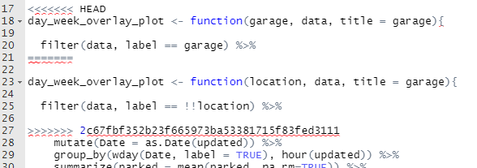
Code conflicts are automatically marked by git. Notice how there are two versions of the same line of code, above and below line 21
Now, simply fix the code by keeping the version you want - make sure to delete all extra code that git has added, commit the file, and push.
It is however much better to avoid these conflicts by always beginning your session with a pull, and ending with a push. That way you minimize the risk of changing the same line of code twice.
6.5 Ignoring files
As discussed, you don’t want all of your local files to be copied to the remote repository. These include private data, large files, most binary files, sensitive information like passwords.
You can keep a list of files to ignore in the file .gitignore, which will most likely already be generated for you in the working directory.
Here is an example, with some useful settings
# No need to track the Rproj file
*.Rproj
# Private data: all files in data/ and config/
data/
config/
# Ignore all these types
*.xlsx
*.pdf
# ... except this file
!public_result.pdfYou can inspect which files are being tracked with the command line:
git ls-filesIt is also always a good idea to inspect the remote repository to see if anything was uploaded you did not want to share. If you accidentally do push passwords to a remote repository, the best way is to delete the remote repository and make a new one with the same name.
6.6 Using the command line
Rstudio is very convenient for day-to-day version control, but for more advanced options, you must know how to use the command line. You may also find that when you gain more git skills, that using the command line is just as convenient while providing more control.
First, we show you how to open the ‘shell’, a command window where the full capabilities of git can be used.
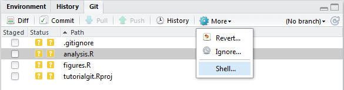
From the ‘Git’ tab in Rstudio (same pane as Environment and History), open the Shell like this.
The shell is different from the Windows command line! It comes installed with git, and recognizes most unix commands.
Note that **if the output is longer than the screen, output will end with a ‘:’. In that case, press q to return to the command prompt}.
6.6.1 Basic commands
When using the command line, you will often repeat this command:
git statusThe output is basically what you see in the Git pane in Rstudio, but in text instead of colored icons (sometimes it is easier to understand what is happening!):
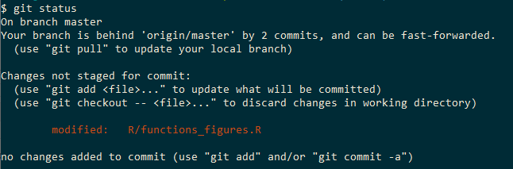
In this example, we have two commits locally that we have not pushed yet, and one previously commited file that has been modified.
If you want to commit from the command line, the first step is to stage the files for the next commit. This is equivalent to using the check boxes in the Git pane in Rstudio. To stage all files that have previously been commited (that is, the files that are being tracked by git in this repository):
git add -uThis command is equivalent to checking all check boxes in Rstudio, except the ones with a question mark (untracked files). This is the preferred command, because you will never commit files you do not want to commit (remember to keep a close eye on the .gitignore file!). If you are sure you want to stage all files that git “sees” (i.e. not in .gitignore), use the command:
git add .This command is equivalent to checking all check boxes (including the question marks) in Rstudio.
With files staged (remember to first look at git status, repeat that after every step!), you can commit with:
git commit -m "improved config files"Writing a commit message is mandatory.
To see if you have a remote repository configured (and where), use the command:
git remote -v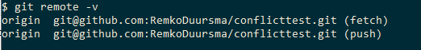
You can now push to the remote with,
git pushIf there are no conflicts, you are done. See advanced examples below for pushing to a remote when you want to overwrite what is on the remote with local changes.
To pull changes from the remote, obviously:
git pull6.6.2 Useful tasks
This section lists a number of useful things you can do with git from the command line. It is by no means exhaustive.
6.6.2.1 History
Look at the history of the repository with,
git logwhich lists each commit (and its SHA and commit message). If you only want to see the last, say 2 commits, do,
git log -2and remember to press q when the output is longer than the window to return to the prompt.
6.6.2.2 Adding a remote to a local repository
Suppose you have a local project as the example workflow in Section 6.3.1, and you want to start a remote repository. You now simply have to let git know that you have a remote as well. To do this, you have to open a Console (see Section 6.6) and use this command:
git remote add origin git@bitbucket.org:remkoduursma/tutorialgit.gitwhere the right-hand side is the address of your remote (found in the last section).
Then, make your changes as usual, and use this special push command the first time you push to the remote (after that, you can do the usual simple ‘git push’).
git push -u origin master6.6.2.3 List all tracked files
If you are unsure which files are being tracked, you could browse the remote repository (if you have one), or use this command:
git ls-files6.6.2.4 Looking around in an old version
Perhaps you don’t actually want to undo changes, but instead inspect some older code, from which you can copy-paste bits you accidentally deleted. We can use the checkout command for this, which let’s you temporarily look at an old commit.
First we find the SHA of the commit, either in the history (in Rstudio), or via git log as shown above.
git log -2Now suppose we want to ‘check out’ (look around and browse) the commit with SHA fbd966 (recall, you only ever need the first 5 or 6 characters of the commit).
git checkout fbd966It is crucial you understand that you can now only look around, but you have not reverted to this old version! This is very useful to take a look at old code, maybe copy some bits and pieces to a new file, and then return to the current version. To make sure you know this, git tells you as much:
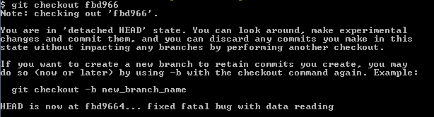
Output of the command line after doing a checkout. Basically git is trying to tell you your visit to this old version of the code is for looking around only.
To return back to the current, last version, do:
git checkout master6.6.2.5 Undoing uncommited changes
Suppose you have committed your work, then made a bunch more changes that you are very unhappy with. But, luckily, you haven’t committed them yet. You can use the ‘Revert’ button in Rstudio (as mentioned previously), but this really removes any chance that you maybe want to use the new edits.
Using the command line, you can use the git stash command as follows:
git stashThe files will not automatically appear as they were in the last commit. The advantage of using stash here - instead of the Revert button in Rstudio - is that if you change your mind you can do git stash apply. Basically your uncommitted changes are kept in a ‘stash’, not deleted.
6.6.2.6 Deleting the last commit
Suppose you have made changes, committed them, and then found out these are terrible and you want to get rid of them. We can use the reset command. Use this at your own risk, it cannot be undone!.
First let’s look at the last two commits,
git log -2So we want to get rid of commit f76gb, and revert back to hu88e.
git reset --hard hu88eInstead of --hard, you can use the --soft option to revert back to the old commit, but keep the changes since then as unstaged changes to the files. This is useful if you want to keep some of the changes, but manually remove or fix some other changes.
6.6.2.7 Force-updating the remote
Sometimes your local version of the code is the only correct version, and you want to completely overwrite the remote repository. This arises when you did a “hard reset” to an old commit as in the previous section. If you are sure you want to overwrite the remote, do:
git push --forceBe careful, there is no “undo” option.
6.6.2.8 Deleting files
We already saw that when you delete a tracked file from a git repository, you have to stage the change just like you stage a modification to a file. Here are a couple of useful commands related to deleting files locally.
Remove from local repository (i.e. stop tracking) all locally deleted files:
git rm $(git ls-files --deleted)The next command is handy to clean your working directory. Use this at your own risk though!
Delete all untracked files:
git clean -fTo do the same, but include subdirectories (use this at even more own risk!):
git clean -f -d6.6.2.9 Searching the history
There are a few ways to search the history - all of them require the command line. It may be useful to find code you deleted (on purpose), or to find all the occassions where some word occurs in changed lines of code, or list all the commits that acted on a particular file.
Find all commits with ‘someword’ in the commit message.
git log --grep=somewordFind all commits where ‘someword’ occurs in changed lines of code
git log -G somewordList all commits that include changes on ‘somefile.R’. This even works when the file was deleted at some point.
git log -- somefile.R6.6.2.10 Accessing git help files
You can learn more about the many options of git via the help files, each of these can be accessed like this.
Show help file for ‘log’.
git log --helpPerhaps more usefully, if you don’t know how to do something in git, simply type your question in Google (“git how to delete untracked files”).
6.7 Branches
A powerful feature of git is the ability to maintain parallel versions of code, with the use of branches. A branch (not to be confused with a fork!) keeps its own history of commits, separate from the main branch (usually called the master branch). At the point when you make the new branch, the master and the new branch are identical - but when you are working on the new branch, changes files and commit - the two will have different histories.
Branches are very useful for working on alternative versions of your working code base on the master branch. For example, when other users depend on your master branch working (and not being polluted with experimental code), but your new changes will take a long time - and multiple commits - to complete.
To make a new branch, I prefer the use of a small button in Rstudio :
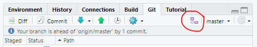
When you click the button, a menu opens up:
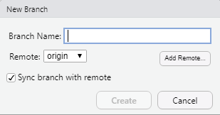
Keep the checkbox checked if you want the branch to also push to the remote (this is usually what you want, though it can be useful to keep a very experimental branch on your computer only).
Ater you click OK, a new branch will be created locally and on the remote :
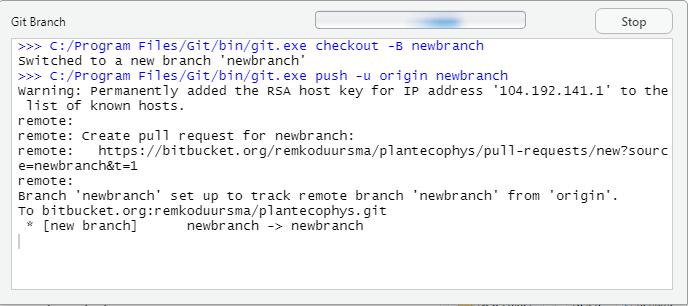
This indicates a successful new branch.
You can now work on the new branch as you would on the master branch. Note the label in the topright of the git pane in Rstudio to see which branch you are currently working on.
Git hosting sites like github support multiple branches in a single repository as well, for example here is a repository with two branches:
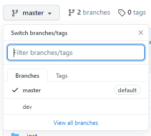
Branches are best for working on experimental new changes for which you intend to include them in the master branch, at some point, or otherwise abandon the experiment and delete the branch. When you want to update the master branch to include changes from the new branch, you must use the command line and first “checkout” the master branch (this can also be done in the Rstudio git pane),
git checkout masterthen, merge the new branch:
git merge newbranch
``
Just like working with remotes, it is possible you have produced conflicts that may need to be fixed.
<!--chapter:end:18-versioncontrol.Rmd-->
# Project management and workflow {#projectman}
## Tips on organizing your code
In this chapter, we present a few tips on how to improve your workflow and organization of scripts, functions, raw data, and outputs (figures, processed data, etc.). The structure that we present below is just an example, and will depend on the particular project, your requirements, how much time you have, and personal preference.
The main **challenge** in developing more complex workflows, where you have multiple data sources, scripts for various analyses, and outputs of various kinds (figures, markdown documents, prepared data etc.) is to keep things organized, avoid *clutter*, and make sure you know how the outputs were produced.
All projects are different, and we encourage you to experiment with different workflows and organization of your script(s) and outputs.
The following is a **rule of thumb** list for R project management:
- Use 'projects' in Rstudio to manage your files and workspace.
- Use *git* version control (see Chapter \@ref(versioncontrol)).
- Use a logical folder structure inside your projects, keeping similar files together (data, scripts, output, etc.).
- Avoid writing long scripts, instead break them into a logical collection of shorter scripts.
- Load all required packages in a separate script.
- Outputs (figures, processed datasets) are *disposable*, your scripts can always re-produce the output.
- Keep function declarations separate from other code.
- Write functions as much as possible.
- Add a 'README.md' file to your project, markdown-formatted file explaining what the project does, a list of any dependencies, how to run the code, where to find the output, etc.
In this chapter we show an example project structure, which uses most of the above rules to come up with a transparent project workflow. If you follow (something like) the structure we show here, you have the added benefit that your directory is fully portable. That is, you can zip it, email it to someone, they can unzip it and run the entire analysis.
For effective project management we find using custom functions to organize our work most useful. See Chapter \@ref(programming) for general introduction to functions, and Section \@ref(scriptstructure) on how to organize your code with functions.
## Set up a project in Rstudio {#rstudioprojects}
The most important tip is to *use projects in Rstudio*. Projects are an efficient method to keep your files organized, and to keep all your different projects separated. There is a natural tendency for analyses to grow over time, to the point where they become too large to manage properly. The way we usually deal with this is to try to split projects into smaller ones, even if there is some overlap between them.
\BeginKnitrBlock{rmdcaution}<div class="rmdcaution">Stop using `setwd()` in any of your scripts. This is never a good idea, for various reasons. Instead use Rstudio projects as a way to set the working directory automatically (and cleanly).
You can also stop using `rm(list=ls())` in any of your scripts. The problem with this command is that it does not clean *everything* : all packages are still loaded, and hidden objects also remain (ones starting with `.`), and certain `options` may have been set. Instead, test reproducing your project by selecting `Session/Restart R` and running the project.</div>\EndKnitrBlock{rmdcaution}
In Rstudio, click on the menu item `File/New Project...`. If you already have a folder for the project, take the 2nd option (`Existing directory`), otherwise create a folder as well by choosing the 1st option (`New project`). We will discuss "version control" in the next chapter.
Browse for the directory you want to create a project in, and click `Choose`. This creates a file with extension `.Rproj`. Whenever you open this project, Rstudio will set the working directory to the location of the project file. If you use projects, you no longer need to set the working directory manually as we showed in Section \@ref(fileswd).
Rstudio has now switched to your new project. Notice in the top-right corner there is a button that shows the current project. For the example project 'facesoil', it looks like this:
<img src="screenshots/projectbutton.png" width="30%" />
**The Project button in Rstudio**
By clicking on that button you can easily switch over to other projects. The working directory is automatically set to the right place, and all files you had open last time are remembered as well. As an additional bonus, the workspace is also cleared. This ensures that if you switch projects, you do not inadvertently load objects from another project.
## Directory structure
For the 'facesoil' project, we came up with the following directory structure. Each item is described further below.
<img src="screenshots/folderstructure.png" width="70%" />
**Folder structure; just an example**
### `rawdata`
If your project contains any raw data files (within ) *keep your raw data separate from everything else*. Here we have placed our raw CSV files in the `rawdata` directory.
In some projects it makes sense to further keep raw data files separate from each other, for example you might have subfolders in the rawdata folder that contain different types of datasets (e.g. 'rawdata/leafdata', 'rawdata/isotopes'). Again, the actual solution will depend on your situation, but it is at least very good practice to store your raw data files in a separate folder.
### `Rfunctions`
If you do not frequently write functions already, you should force yourself to do so. Particularly for tasks that you do more than once, functions can greatly improve the clarity of your scripts, helps you avoid mistakes, and makes it easier to reuse code in another project.
It is good practice to keep functions in a separate folder, for example `Rfunctions`, with each function in a separate file (with the extension `.R`). It may look like this,
<img src="screenshots/rfunctions.png" width="70%" />
**Contents of Rfunctions folder, example.**
We will use `source()` to load these functions, see further below.
### `output`
It is a good idea to send all output from your R scripts to a separate folder. This way, it is very clear what the *outputs* of the analysis are. It may also be useful to have subfolders specifying what type of output it is. Here we decided to split it into figures, processeddata, and text :
<img src="screenshots/output.png" width="70%" />
**Contents of output folder, example.**
## The R scripts
A few example scripts are described in the following sections. Note that these are just examples, the actual setup will depend on your situation, and your personal preferences. The main point to make here is that it is tremendously useful to separate your code into a number of separate scripts. This makes it easier to maintain your code, and for an outsider to follow the logic of your workflow.
### `facesoil_analysis.R`
This is our 'master' script of the project. It calls (i.e., executes) a couple of scripts using `source`. First, it 'sources' the `facesoil\_load.R` script, which loads packages and functions, and reads raw data. Next, we do some analyses (here is a simple example where we calculate daily averages), and call a script that makes the figures (`facesoil_figures.R`).
Note how we direct all output to the `output` folder, by specifying the *relative path*, that is, the path relative to the current working directory.
```r
# Calls the load script.
source("facesoil_load.R")
# Export processed data
write.csv(allTheta, "output/processeddata/facesoil_allTheta.csv",
row.names=FALSE)
## Aggregate by day
# Make daily data
allTheta$Date <- as.Date(allTheta$DateTime)
allTheta_agg <- summaryBy(. ~ Date + Ringnr, data=allTheta,
FUN=mean, keep.names=TRUE)
# Export daily data
write.csv(allTheta_agg, "output/processeddata/facesoil_alltheta_daily.csv",
row.names=FALSE)
## make figures
source("figures.R")6.7.1 facesoil_figures.R
In this example we make the figures in a separate script. If your project is quite small, perhaps this makes little sense. When projects grow in size, though, I have found that collecting the code that makes the figures in a separate script really helps to avoid clutter.
Also, you could have a number of different ‘figure’ scripts, one for each ‘sub-analysis’ of your project. These can then be sourced in the master script (here facesoil\_analysis.R), for example, to maintain a transparent workflow.
Here is an example script that makes figures only. Note the use of dev.copy2pdf, which will produce a PDF and place it in the output/figures directory.
# Make a plot of soil water content over time
pdf("./output/figures/facesoil_overtime.pdf")
with(allTheta, plot(DateTime, R30.mean, pch=19, cex=0.2,
col=Ringnr))
dev.off()
# More figures go here!The above is OK, but we can do better by writing it into a function, and then calling it to make the PDF. Even better, the PDF making can be done Here we also use on.exit to safely close the PDF, see Section @ref(onexit.
Like so,
# A function that defines our plot
# Write functions like these, and collect them in a separate script,
# for example "figure_definitions.R".
soilplot_1 <- function(data){
with(data, plot(DateTime, R30.mean, pch=19, cex=0.2,
col=Ringnr))
}
# A generic function that makes a PDF of a provided function call
# Place this function in a script with a collection of functions.
to.pdf <- function(expr, filename, ...) {
pdf(filename, ...)
on.exit(dev.off())
# A trick to run the provided function call in the global environment
eval.parent(substitute(expr))
}
# Finally, after having sourced both our function definition,
# and the generic function to.pdf, we can make the PDFs.
to.pdf(
soilplot_1(allTheta),
filename = "output/figures/figure1.pdf"
)6.7.2 facesoil_load
This script contains all the bits of code that are
- Cleaning the workspace
- Loading homemade functions
- Reading and pre-processing the raw data
It is useful to load all packages in one location in your, which makes it easy to fix problems should they arise (i.e., some packages are not installed, or not available).
6.7.3 load_packages.R
We find it very convenient to collect all library calls throughout your project in a single script. The advantage is that at the top of one of the main analysis scripts, we can simply call source("load_packages.R"). If any packages are missing, or something else failed, we know before try to we execute any other code.
It may also be convenient to suppress all messages we see when loading packages. An example script may look like:
The disadvantage of a loading script like this is that we assume that the user has installed all of the required packages. In Rstudio, however, if you open this script - a small message will appear at the top of the script, “Would you like to install missing packages?”. If you click OK all packages mentioned in the script that you have not installed will be installed for you.
Another approach uses the pacman package, which automatically installs missing packages (see also Section 1.10.9):
## Loading required package: pacmaninstall.packages in any of your scripts in your project. You do not want to call it more than once, otherwise the execution of the project will be much slower (and require an internet connection).
6.7.4 facesoil_readdata.R
This script produces a dataframe based on the raw CSV files in the rawdata folder. The example below just reads a dataset and changes the DateTime variable to a POSIXct class. In this script, I normally also do all the tedious things like deleting missing data, converting dates and times, merging, adding new variables, and so on. The advantage of placing all of this in a separate script is that you keep the boring bits separate from the code that generates results, such as figures, tables, and analyses.
6.8 Archiving the output
In the example workflow we have set up in the previous sections, all items in the output folder will be automatically overwritten every time we run the master script facesoil_analysis.R. One simple way to back up your previous results is to create a zipfile of the entire output directory, place it in the archive folder, and rename it so it has the date as part of the filename.
After a while, that directory may look like this:

Contents of archive folder, example.
If your processData folder is very large, this may not be the optimal solution. Perhaps the processedData can be in a separate output folder, for example.
6.8.1 Adding a Date stamp to output files
Another option is to use a slightly different output filename every time, most usefully with the current Date as part of the filename. The following example shows how you can achieve this with the today from the lubridate package, and the glue package:
# For the following to work, load lubridate
# Recall that in your workflow, it is best to load all packages in one place.
library(lubridate)
library(glue)
# Make a filename with the current Date:
fn <- glue("output/figures/FACE_soilfigure1_{today()}.pdf")
fn## output/figures/FACE_soilfigure1_2020-11-09.pdf# Also add the current time, make sure to reformat as ':' is not allowed!
fn <- glue("output/figures/FACE_soilfigure1_{format(now(),'%Y-%m-%d_%H-%M')}.pdf")
fn## output/figures/FACE_soilfigure1_2020-11-09_21-27.pdf6.9 A logical structure for your scripts
6.9.1 Write functions, not long scripts
If a script becomes too long, write more functions. Writing your own functions is the most important advise if you want to write and maintain robust, complex projects.
As pointed out in the Chapter on Project management (??), save these functions separately, for example “R/functions.R”, and source them with:
Unfortunately source is not vectorized, so to read all R scripts from a subdirectory you can simply do,
6.9.2 Divide your script into functional blocks
Dividing your scripts into a few functional blocks can help readability and reliability. With special formatting, you can even improve the table of contents (TOC) menu in Rstudio for a script. Run the example below, and then find the TOC button in Rstudio:

Access the (nearly) automatic TOC in Rstudio
In the following example script, note that we load all packages at the beginning of the script, so that when something goes wrong at that stage, we know before executing any of the ‘real’ code.
Also note the use of #-----, this helps to make the TOC as mentioned above.
# An example script
# 2020, Author
#----- Load packages -----
library(dplyr)
library(rvest)
library(stringr)
library(glue)
#----- Custom functions -----
source("R/functions.R")
source("R/database_functions.R")
#----- Configuration -----
# Load configuration (passwords etc., see next Section!)
.conf <- yaml::read_yaml(file = "config.yml")
#----- Database -----
# Make database connection
db_con <- make_database_connection_knmi(.conf)
# Download data
cloud_data <- download_cloud_data(con = db_con)
# Archive the data
fn <- glue("archive/out_{Sys.Date()}.rds")
try(saveRDS(cloud_data, fn), silent = TRUE)
#----- Visualization -----
# Make visuals
make_cloud_maps(data = cloud_data)
#----- Model -----
# Do some advanced modelling
model_run <- run_cloudy_model(data = cloud_data)
# Upload the model results to a remote database
upload_model_db16(model_run, config = .conf)The fictional script above is just an example how you can divide a master script into logical statements, using functions that perform all the underlying tasks.
One major advantage of the above approach is because functions execute their “inner workings” in a separate environment, which means that objects inside a function are not visible either outside the function (like the main script) or in any other script.
That way, executing the script above does not produce any objects in the environment (the memory) other than the ones returned by the functions. All the intermediate objects that were executed inside each function have disappeared, freeing memory and avoiding conflicts.